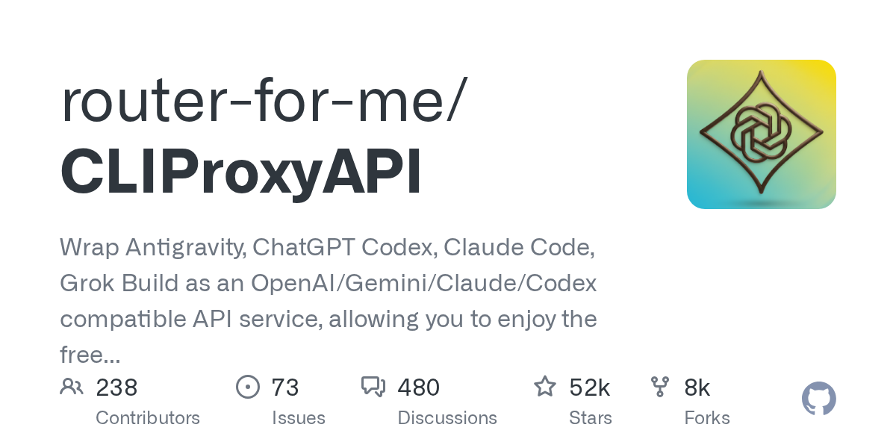

07 GitHub
router-for-me/CLIProxyAPI
여러 AI 도구를 한 API로 묶는 중계기
★ 51,970이번 주 +827GoMIT 사내 사용 가능릴리스 v7.3.4 (09.15)최근 활동 09.16테스트 있음예제 있음AGENTS.md 있음

이 저장소는 여러 AI CLI를 공통 API 형태로 감싼다. 사용자는 OpenAI, Gemini, Claude, Codex, Grok 호환 인터페이스로 요청을 보낼 수 있다. 내부에서는 각 서비스의 로그인 방식과 응답 차이를 흡수한다. 다계정 분산과 스트리밍 응답도 포함한다.
무엇을 하는 물건인가
CLIProxyAPI는 여러 AI CLI를 공통 API로 바꿔 주는 프록시 서버다. 각 모델 서비스에 직접 맞춘 코드를 따로 짜지 않아도, 익숙한 API 형식으로 같은 애플리케이션에서 호출할 수 있다. 이미 쓰는 클라이언트나 SDK를 유지한 채 뒤쪽 연결만 갈아끼우는 데 맞춘 구성이다. 각 은행 전산망을 하나의 중계 허브로 묶어 같은 양식으로 요청을 주고받게 하는 방식과 닮았다.
스펙과 도입 조건
- Go로 만들었다.
- 프록시 서버 형태로 쓴다.
- 데스크톱용 EasyCLIProxyAPI 클라이언트를 별도로 권장한다.
- Dockerfile이 있다.
- OpenAI Codex, Claude Code, Grok Build는 OAuth 로그인을 지원한다.
- 여러 OpenAI, Gemini, Claude, Grok 계정을 함께 붙일 수 있다.
- 라이선스는 MIT다.
- 최신 릴리스는 v7.3.4이고 날짜는 2026-09-15다.
대안 대비 차별점
이 저장소는 특정 모델 하나에 묶이지 않는다. 여러 CLI 계정과 공급자를 공통 API로 감싸서 기존 OpenAI 호환 클라이언트나 SDK를 그대로 붙이기 쉽게 만든다. OAuth 로그인 기반 연결도 포함한다. 그래서 API 키 중심 구성만 가정한 도구보다 실제 사용 계정과 실험 환경을 더 유연하게 다룬다.
이럴 때 쓰면 좋다
- 사내 챗봇이나 개발 보조도구가 여러 모델을 시험할 때 백엔드 접속 방식을 하나로 맞출 수 있다.
- 고객 문의 분류나 요약 시스템에서 모델 공급자를 바꿔 가며 품질을 비교할 때 클라이언트 수정 범위를 줄일 수 있다.
- 팀별로 다른 CLI 계정을 쓰는 환경에서 공용 API 계층을 두고 요청을 분산할 수 있다.
핵심 기능
- OpenAI, Gemini, Claude, Codex, Grok 호환 API 엔드포인트를 제공한다.
- 스트리밍, 비스트리밍, WebSocket 응답을 지원하는 범위에서 처리한다.
- 함수 호출과 도구 사용, 텍스트와 이미지 입력, 다계정 라운드로빈 분산을 지원한다.
사내 도입 체크
- 외부 AI 서비스와 OAuth 로그인에 의존하므로 외부 호출이 전제된다.
- 프록시를 거치면 사내 입력 데이터가 외부 모델로 전달될 수 있어 반출 기준을 확인해야 한다.
- 유지보수 주체는 router-for-me 조직인지 개인인지 확인 필요다.
- 여러 상용 AI 게이트웨이와 기능이 겹치지만, 호환 API 범위와 운영 책임 분담은 따로 비교해야 한다.
주요 용어
프록시(Proxy): 중간에서 요청을 받아 다른 서비스로 전달하는 구성 OAuth(OAuth): 비밀번호를 직접 주지 않고 계정 권한을 위임하는 로그인 방식 라운드로빈(Round Robin): 요청을 순서대로 여러 계정이나 서버에 분산하는 방식 WebSocket(WebSocket): 연결을 유지한 채 실시간으로 데이터를 주고받는 방식 멀티모달(Multimodal): 텍스트 외에 이미지 같은 여러 입력 형식을 함께 다루는 방식
원문 정보
제목: router-for-me/CLIProxyAPI
최근 활동: 2026.09.16